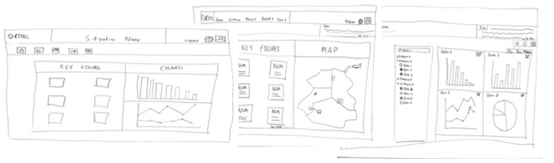
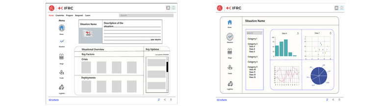

User Interface Design
Hand-drawn Sketches
We created hand-drawn sketches initially to visualize the layout and elements of our interface.
The below sketches are the initial round of sketches we put together after our first client meeting. It served as a rough understanding of the client's requirements.

After some more consideration and discuss, we came up with a second round of sketches which included more types of graphs.
After finalizing the general layout, we moved on to making prototypes using figma.

The below was our final prototype, before we moved on to actual development.

Due to certain design choices made by the client, and a change in the graph types from simple bar, line, and pie charts, we had to adapt and change the UI significantly in our final product.
The below images show our final product that we handed over to the clients.
User Interface Design Principles
1. Flexibility: The user interface of the IFRC Chart Gallery Project emphasizes flexibility, allowing users to customize their data visualization experience according to their specific needs and preferences. Users can choose from a diverse range of chart types, including hierarchical layouts, force-directed graphs, and heatmaps, enabling them to select the most suitable visualization method for their data analysis tasks. Additionally, interactive features such as zooming and panning functionality enhance flexibility by providing users with dynamic control over their visualizations, ensuring a tailored and adaptable user experience.
2. Simplicity: Simplicity is a guiding principle in the design of the IFRC Chart Gallery Project, aimed at promoting ease of use and accessibility for users of varying technical backgrounds. The interface presents data visualizations in a clear and concise manner, prioritizing essential information while minimizing unnecessary complexity. Intuitive navigation and straightforward controls further enhance simplicity, enabling users to interact with the charts effortlessly and focus on deriving insights from the data without distractions.
3. Consistency: Consistency is maintained throughout the IFRC Chart Gallery Project to provide users with a cohesive and predictable experience across different chart types and interactive elements. Unified design patterns, such as consistent color schemes, typography, and layout structures, promote visual harmony and usability, reducing cognitive load for users as they navigate through the gallery. By adhering to consistent design standards, the interface ensures familiarity and ease of use, facilitating efficient information processing and interpretation.
4. Feedback and Visibility: Effective feedback mechanisms are integrated into the IFRC Chart Gallery Project to keep users informed and engaged during their interaction with the visualizations. Instantaneous feedback, such as hover tooltips and interactive data points, provides users with real-time insights into the underlying data and actions they perform. Additionally, visual cues and status indicators enhance visibility, helping users understand the impact of their interactions and navigate the interface with confidence.
5. User-Centric Design: The IFRC Chart Gallery Project adopts a user-centric design approach, placing the needs and preferences of IFRC stakeholders at the forefront of design decisions. Regular user feedback sessions and usability testing inform iterative improvements to the interface, ensuring that design choices align with user expectations and facilitate their data analysis workflows effectively. By actively involving stakeholders in the design process, the interface strives to deliver a user experience that meets their evolving requirements and fosters engagement with the visualizations.